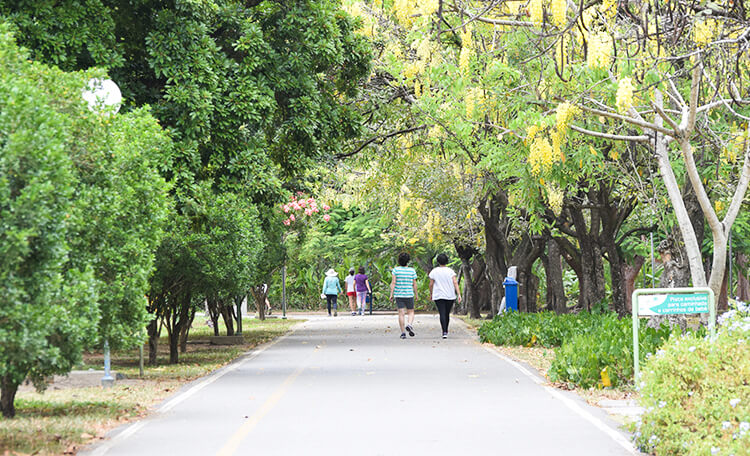

o parque
Localizado na região norte de Recife, em uma área repleta de serviços, o entorno do Parque da Jaqueira oferece uma ampla variedade de comodidades aos visitantes. Além do próprio parque, os frequentadores têm à disposição o Cais da Jaqueira, livrarias, academias de ginástica, galerias de arte, lanchonetes, restaurantes e hospitais. Esta área é completa, voltada para o lazer e a prática de esportes. O parque também dispõe de banheiros públicos para mulheres, homens, crianças e pessoas com mobilidade reduzida, bem como um estacionamento público com capacidade para acomodar até 140 veículos. A segurança é garantida por um efetivo da Guarda Municipal, apoiado por seis câmeras de videomonitoramento.
história
Inaugurado em 10 de abril de 1985, o Parque da Jaqueira celebra três décadas de existência como um dos principais espaços de Recife dedicados ao lazer, cultura e atividades esportivas. Com uma área de sete hectares, foi considerado o maior parque público da cidade até 2014, quando o Parque Urbano da Macaxeira foi aberto ao público. O Parque abriga um sítio histórico que preserva parte da região como era no século 18. Dentro dessa área encontra-se uma capela construída em 1766 pelo capitão Henrique Martins, que era proprietário da terra naquela época. Originalmente chamada de Nossa Senhora da Conceição de Ponte d'Uchôa, ao longo do tempo, foi renomeada pela comunidade como Nossa Senhora da Conceição da Jaqueira, uma alusão às árvores que a cercavam. Em 1970, a capela foi tombada e restaurada, e um jardim projetado por Burle Marx foi adicionado. Em 1984, a área onde o parque está localizado foi cedida à Prefeitura do Recife em regime de comodato por vinte anos. Entretanto, em 2001, por meio da Lei Federal 10.175, o Instituto Nacional de Seguridade Social (INSS) recebeu autorização para fazer a doação definitiva da área.
atrativos
O Parque da Jaqueira é um lugar repleto de atrações para todos os visitantes. Com 900 metros de pista de cooper e 820 metros de ciclovia, é ideal para os amantes de atividades ao ar livre. Além disso, oferece um espaço dedicado ao skate e bicicross, um ringue de patinação e áreas destinadas à prática de ioga e dança. A presença da Academia da Cidade complementa as opções de exercício, com equipamentos de ginástica e musculação disponíveis. Para cuidar da saúde, o parque possui um posto de saúde onde os visitantes podem medir a pressão arterial e receber orientações nutricionais.
As famílias podem desfrutar de quatro parques infantis, cada um projetado para diferentes faixas etárias, incluindo um parque inclusivo pioneiro no Recife. Este parque inclusivo, inaugurado em 2013, apresenta brinquedos totalmente adaptados, doados pela Duracell, e infraestrutura de acessibilidade executada pelo Emlurb. Além disso, o Parque da Jaqueira também oferece áreas pitorescas para piquenique e espaços de contemplação com bancos e mesas, convidando os visitantes a relaxar e apreciar a natureza circundante.
informações
Entrada gratuita
Funcionamento do parque: Diariamente: das 4h às 22h
Funcionamento do escritório administrativo:
Segunda a sexta: das 7h às 16h | Sábado e domingo: das 8h às 12h / das 14h às 16h
Telefone: (81) 3355-7374